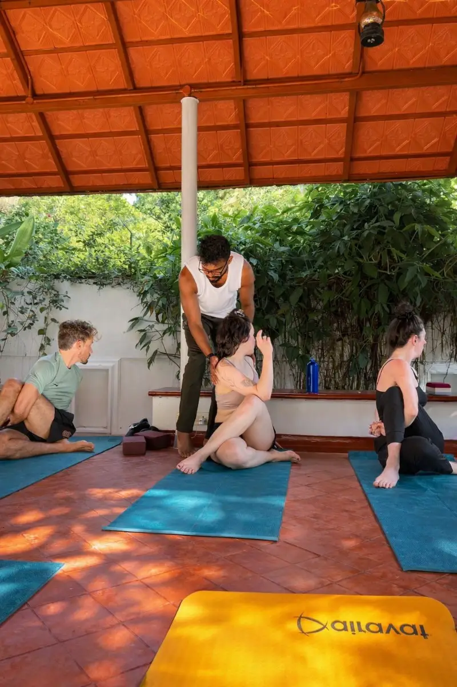

In short
Santhi School of Yoga holds a two-hour walk-in Hatha Yoga class every day at 7:30 am and 3:30 pm in Chirattapalam, Fort Kochi, a short ride from Mattancherry, Thoppumpady, Palluruthy, Willingdon Island and, by ferry, Vypin. No booking or experience is needed, mats are provided, and classes are taught in English in a small group. A class is ₹500 (a limited-time offer; normally ₹600, and ₹700 from November 2026), and anyone practising with us for more than a week gets 30% off.
When people in Kochi search for a yoga class, they are usually shown studios in Kakkanad, Edappally or Panampilly Nagar, on the mainland, a long drive from West Kochi in traffic. It is easy to assume there is nothing closer.
There is. Our school has taught in Fort Kochi for over fifteen years. Many of the people in the room on any given day are travellers, but the class has always been open to anyone living nearby.
What the class is
This is a traditional Hatha Yoga class in the Sivananda style, two hours long, taught by Master Aksharanand A S, known to everyone as Achu. Each class follows the same order:
- an opening relaxation, lying down, to settle the body and mind,
- pranayama, the breathing practices,
- Surya Namaskar, the sun salutation,
- asanas, the postures, adapted for every level in the room,
- a long, deep final relaxation.
Two hours sounds long if you are used to a one-hour gym class. It is not a harder class, just a less hurried one: postures are held, there is rest between them, and corrections are given by hand. Our minute-by-minute guide to a two-hour class shows exactly how the time goes.
Classes are taught in English, in a small group. If English is a worry, send us a message before you come.
Who comes
The class mixes complete beginners with people who have practised for years, and visitors from abroad with people from across India. Everyone practises together and works at their own level.
It suits you if you want to:
- start yoga properly, with a teacher who corrects you in person,
- ease a stiff back, tight hips or the effects of long days at a desk or behind a counter,
- sleep better and feel calmer,
- keep up a practice you learned years ago.
If you have an injury, a medical condition or are pregnant, tell us before class so the practice can be adapted. For focused work on a specific problem, a private session may suit you better.
Fees
| Class | Price |
|---|---|
| Drop-in group class (2 hours) | ₹500 (a limited-time offer; normally ₹600, and ₹700 from November 2026) |
| Private session | ₹1,500 (₹2,000 from November 2026) |
There are no packages or memberships to sign up for. You simply come when you can and pay for the class. Anyone practising with us for more than a week gets 30% off classes, which makes a regular practice considerably cheaper. Our guide to yoga class fees in Kochi compares what different kinds of class cost across the city.
Getting here from West Kochi
The school is on Chirattapalam Road, in the residential lanes of Fort Kochi. Auto drivers in Fort Kochi know Chirattapalam.
| From | How |
|---|---|
| Mattancherry and Jew Town | A short auto-rickshaw ride, or a bicycle. |
| Thoppumpady | About 5 km. Auto, scooter, or any bus towards Fort Kochi. |
| Palluruthy | About 8 km. Scooter or auto, roughly 15 to 20 minutes outside rush hour. |
| Willingdon Island | By road over the bridge via Thoppumpady. |
| Vypin | The short ferry from Vypin to Fort Kochi, then a five-minute auto. |
| Ernakulam | Water Metro from High Court to Fort Kochi, about 20 minutes. See Ernakulam to Fort Kochi. |
For the morning class: some mornings the class is held at Secret Garden, an open garden nearby, from 8:00 to 9:30 am. Please message us the evening before and we will tell you where to come. For the afternoon class, just come to the school at 3:30.

Your first class
- Wear comfortable clothes you can stretch in: track pants or leggings and a T-shirt are ideal.
- Eat lightly, or not at all, for two to three hours before. A morning class on an empty stomach is best. See what to eat before yoga.
- Bring water and a small towel. Mats are provided.
- Arrive ten minutes early the first time, so we can ask about any injuries.
For everything else, including what to do when a pose is too hard, read your first yoga class: a beginner’s guide.
Why practise with a teacher
Many people start yoga from videos, and that is better than nothing. But a video cannot see that your knee is turning in, or that you are holding your breath in every posture. A teacher who watches you, corrects you by hand and adjusts the practice to your body saves years of habits that later have to be undone, and prevents the injuries that make people give up. That is why we keep our classes small. We have written about why small groups matter.
Come to a class this week
Every day, 7:30–9:30 am and 3:30–5:30 pm, in Chirattapalam, Fort Kochi. ₹500 a class (a limited-time offer; normally ₹600, and ₹700 from November 2026), and 30% off once you have been practising with us for more than a week. No booking needed. Message us the evening before a morning class.
Comparing classes across the city? Yoga classes in Kochi: how to choose the right one covers the kinds of class on offer from Fort Kochi to Kakkanad.
Common questions
Is there a yoga class near Mattancherry?
Yes. Santhi School of Yoga, on Chirattapalam Road in Fort Kochi, holds two-hour walk-in Hatha Yoga classes every day at 7:30 am and 3:30 pm, a short auto ride from Mattancherry.
How much is a yoga class in Fort Kochi?
At Santhi School of Yoga a two-hour group class is ₹500 (a limited-time offer; normally ₹600, and ₹700 from November 2026). A private session is ₹1,500 (₹2,000 from November 2026). Anyone practising for more than a week gets 30% off.
Do I need to book a yoga class in Fort Kochi?
No booking is needed for the daily group class. For the 7:30 am class, message the school the evening before, as some mornings it is held at a nearby garden from 8:00.
Are the classes suitable for beginners?
Yes. Complete beginners and experienced practitioners practise together, and the teacher adapts postures to each person, correcting by hand in a small group.
Is there a monthly membership?
No. There are no packages or memberships; you pay per class. Students who practise for more than a week get 30% off classes.

Known to his students as Achu, Aksharanand trained in the Sivananda tradition and holds an Advanced Teacher Training Certificate. He has taught Hatha Yoga, pranayama, meditation and Vedanta philosophy in Fort Kochi for over fifteen years, across more than 5,000 group classes and seventy international teacher training batches.
More about Achu and the school · Book a class or ask a question